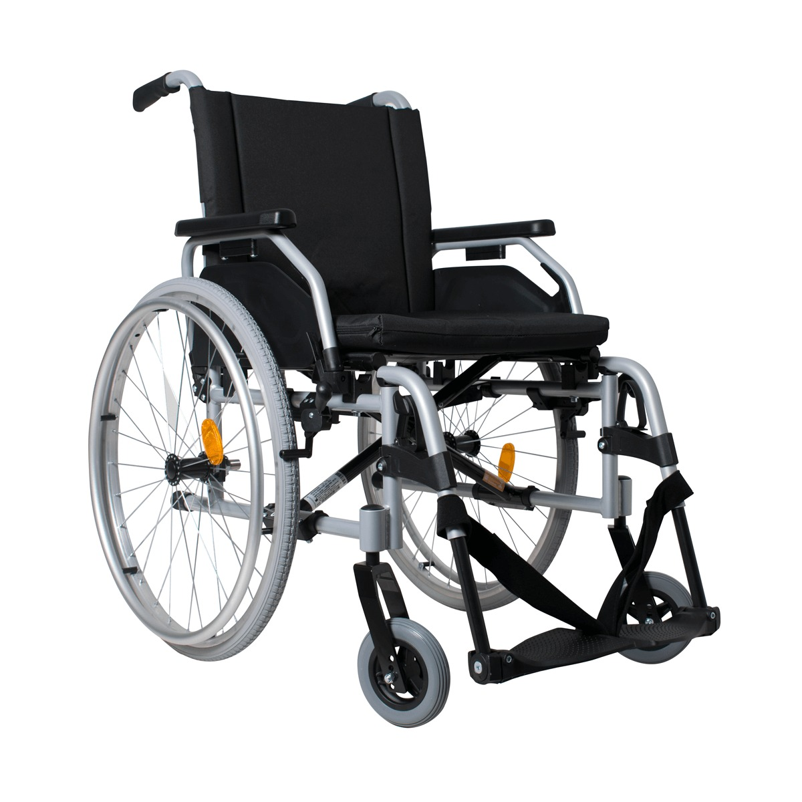

Ford Transit
Просторный салон, фиксация оборудования, стабильный ход для комфортной поездки по городу и между населенными пунктами.
Помогаем семьям в сложный момент: аккуратно переносим пациента, бережно доставляем в клинику, домой или на реабилитацию. Работаем по Казани и всей Республике Татарстан.
Используем автомобили, подготовленные для медицинской транспортировки, и оборудование для безопасного перемещения пациента.
Просторный салон, фиксация оборудования, стабильный ход для комфортной поездки по городу и между населенными пунктами.

Комфортный микроклимат, удобная посадка сопровождающего и достаточное пространство для безопасной транспортировки.

Профессиональная каталка и ремни безопасности помогают мягко и надежно переместить пациента.

Организуем транспортировку пассажиров в инвалидных колясках, включая помощь при посадке и сопровождении.
Сервис создан для семей, которым нужно быстро и бережно организовать перевозку пациента без лишнего стресса.
Когда пациенту сложно передвигаться самостоятельно после лечения или травмы.
Для безопасной перевозки из стационара домой с аккуратным подъемом до кровати.
Когда требуется транспортировка в коляске или на каталке с сопровождением.
Работаем с типовыми и срочными запросами: перевозка из больницы домой, на обследование, на реабилитацию и в другой населенный пункт.
Основное направление: Казань и ближайшие районы. Также выполняем перевозку лежачих больных по Республике Татарстан и за ее пределы по согласованию маршрута.
Если ситуация срочная, звоните сразу: мы принимаем заявки круглосуточно и быстро согласуем время подачи машины.
Чтобы уточнить стоимость и время подачи в ваш адрес, перейдите в раздел контактов или сразу позвоните по номеру +7 (965) 259-59-12.
Ниже часть реальных отзывов. Полный список доступен на отдельной странице.
Да, служба работает круглосуточно без выходных. Срочные перевозки принимаем в любое время.
Да, в салоне предусмотрено место для сопровождающего родственника.
По Казани, по Республике Татарстан и в соседние районы по предварительному согласованию.